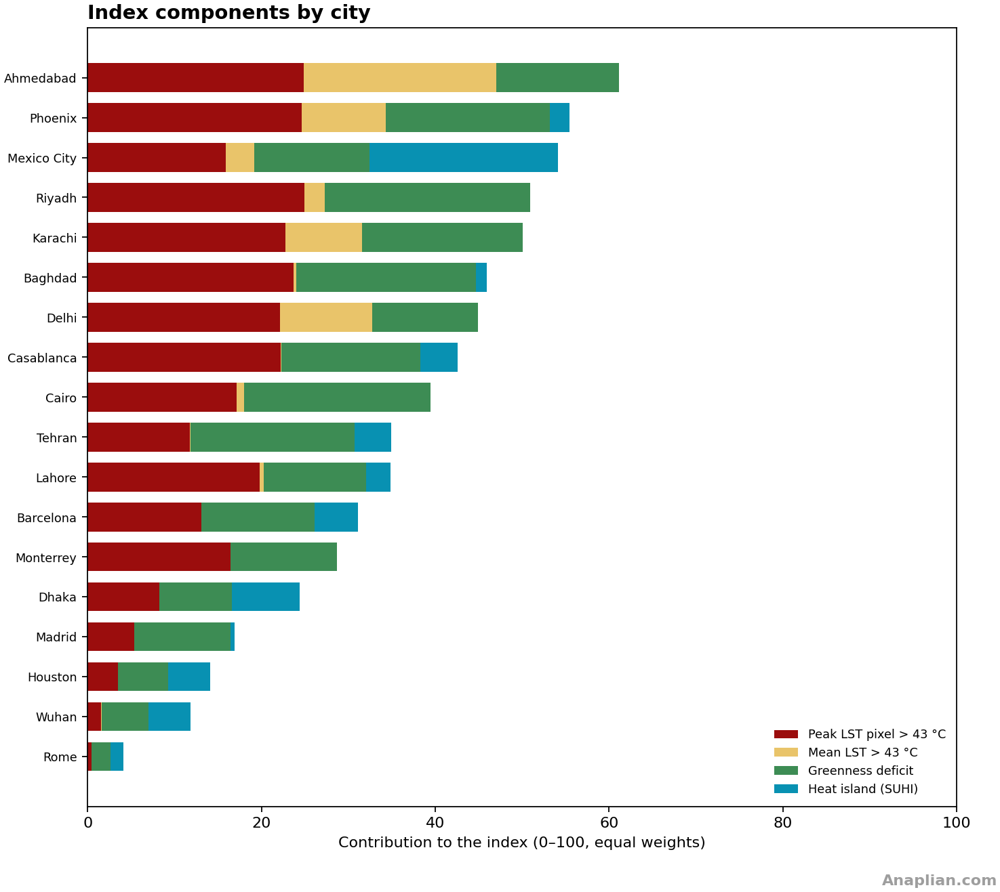
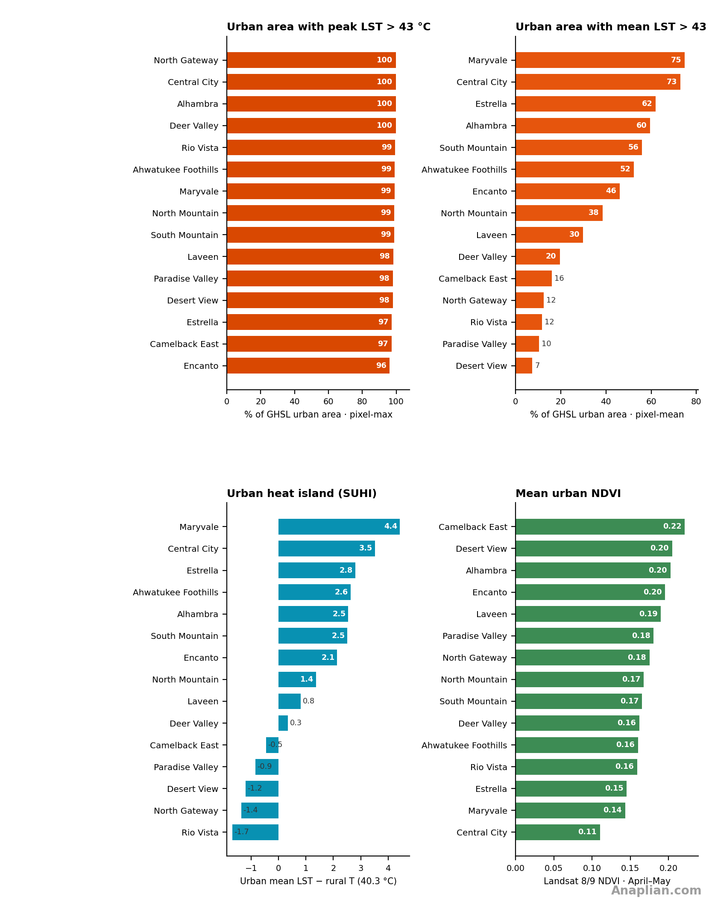

1. Introduction
The sustained rise in mean temperature and in its variability — more extreme days, longer heatwaves — falls on human settlements. The body sheds heat by radiation, convection and, above all, evaporation of sweat. When air and radiating surfaces block that loss, core temperature rises, the heart works harder to send blood to the skin, and water and electrolytes are lost. The outcome can be heat exhaustion, heat stroke or cardiovascular and renal strain. Night-time heat, typical of urban islands, cuts recovery during sleep. The risk is higher for older people, those with chronic illness, outdoor workers and residents of poorly ventilated or unshaded housing.
The purpose of this index is to quantify that surface heat load and make it comparable, so as to see where vulnerability concentrates and which urban traits foster it: pavement, sheds, vegetation deficit and heat islands relative to the surroundings. It does not replace demography or epidemiological surveillance; it ranks territory by surface exposure, with a fixed metric across cities.
The comparison works at two scales. Across cities, the same number sizes the problem against places that already apply good practice or illustrate solutions to heat concentration. Inside each city, the political units — in Phoenix, the urban villages — locate the most problematic zones in more detail and point to authorities and residents with a direct stake in addressing them.
For data availability and comparability we use four Landsat layers. Three are surface temperature: the period maximum, the mean of the observations and the heat island, the differential between a nearby rural or less-urbanised reference zone and the temperature in the area. The fourth is a vegetation index (NDVI) that enters inverted: lower greenness is penalised, because vegetation has a clear cooling effect.
2. Position in the index
Phoenix ranks 2 of 18 cities measured in April and May 2026, with a Climate Vulnerability Index (IVC) of 55.4 out of 100. Ahmedabad leads. Mexico City (54.1) comes next. Almost all of the urban pixel-max exceeds 43 °C (99 %); the composite mean does so on 39 % of urban land. Rural desert is already about 40 °C, so urban SUHI is only +1.3 °C. What sets Phoenix apart is pavement and a greenness deficit on a hot desert, not a CDMX-style island over a cool forest.

Inside the city the index concentrates in the west and the core. Maryvale leads (IVC 71): arterials, parking and low roofs. Central City (71) adds downtown, warehouses and the Sky Harbor edge (NDVI 0.11). Estrella (65) is new sprawl on scraped desert. South Mountain (62) mixes the preserve with paved foothills. Ahwatukee Foothills (62) is master-planned tile roofs. Desert View ranks last (44), on the northern conservation fringe.
West-side villages (Maryvale, Central City) combine slab, parking and almost no canopy; mean LST still exceeds 43 °C on most of the urban mask. Northern villages (Desert View, North Gateway, Paradise Valley) keep a high pixel-max — desert roofs in April — but the mean falls because density and asphalt drop.
Unlike Mexico City, Phoenix cannot lean on a cool rural reference (~40 °C). Unlike Ahmedabad, the mean is not already saturated at 89 %. Design still moves the mean: shade, albedo and less parking separate Maryvale from Desert View. Desert View shows the floor of the city ranking.
Land cover in the five highest-IVC urban villages is asphalt, parking, low roofs and airport or arterial slab, with little green. Maryvale is strip-mall parking and six-lane roads. Central City adds downtown decks and the Sky Harbor runways and aprons. Estrella is fresh pavement on desert. South Mountain’s urban score sits on the asphalted foothills, not on the preserve. Ahwatukee Foothills is tile roofs and arterials on desert lots. Canopy is fragmented; it does not offset the slab.
3. Highest-IVC subdivisions
Among 296 political subdivisions of the 18 cities in the comparable index, 6 Phoenix urban villages enter the top 25: Maryvale (5th, IVC 71), Central City (7th, IVC 71), Estrella (9th, IVC 65), South Mountain (14th, IVC 62), Ahwatukee Foothills (16th, IVC 62), Alhambra (17th, IVC 61). Maryvale sits 5th overall, between Azcapotzalco and Cuauhtémoc. The components chart shows high z_LST max and greenness deficit, with a modest SUHI: desert pavement, not a 13 °C island. Desert View (44) stays well outside the top 25.


4. Four methods
Comparable metric ivc-l4-v1. IVC = 100 × mean of zmax, zmean, zNDVI inv and zSUHI. City: IVC 55.4 · SUHI 1.3 °C · T rural 40.3 °C · 24 scenes · 9.4 obs./pixel · ~11:05 local time (18:05 UTC).
1. Per-pixel maximum LST
Maximum surface temperature. Landsat 8 and 9 Collection 2 Level 2, band 10 (ST_B10), 1 April–31 May 2026. 24 scenes; overpass ~11:05 local time (18:05 UTC). Per-pixel mask of fill, cloud, shadow and LST outside 0–80 °C. LST = 0.00341802×DN + 149 − 273.15. Maximum of valid observations (9.4 obs./pixel). Overlay and index: urban fraction > 43 °C.
2. Mean LST of observations
Mean surface temperature of observations. Same collection and mask. Mean of valid scenes. The map colours from 35 °C; the index uses the urban fraction > 43 °C.
3. Vegetation (NDVI)
Vegetation. NDVI = (NIR − red)/(NIR + red), SR_B5 and SR_B4. Period mean (24 scenes, ~11:05 local time (18:05 UTC)). Urban greenness: NDVI ≥ 0.30 inside GHSL SMOD ≥ 21. It enters the index inverted on a fixed 0.05–0.55 scale.
4. Heat island (SUHI)
Surface urban heat island. SUHI = pixel mean LST − rural T. T rural = 40.3 °C, GHSL 2020 SMOD 11–13 inside the polygon (526 km² rural). Overlay: SUHI > 8 °C. z_SUHI = min(max(urban SUHI, 0) / 15, 1).
5. Per-pixel maximum surface temperature (> 43 °C)

6. Mean surface temperature of observations (> 35 °C)

7. Vegetation (NDVI)

8. Heat island (pixel − rural)

9. Four sub-index elements

Area 1440 km² · GHSL urban 913 km² (63%) · peak LST > 43 °C: 99% · mean LST > 43 °C: 39% · urban SUHI 1.3 °C · greenness 10% · city IVC 55.4.
10. Table of urban villages
| # | Urban village | IVC | Peak LST > 43 °C | Mean LST > 43 °C | SUHI °C | Urban NDVI | Greenness | Obs./pixel |
|---|---|---|---|---|---|---|---|---|
| 1 | Maryvale | 71.2 | 99% | 75% | 4.4 | 0.14 | 5% | 6.5 |
| 2 | Central City | 71.1 | 100% | 73% | 3.5 | 0.11 | 3% | 7.0 |
| 3 | Estrella | 64.8 | 97% | 62% | 2.8 | 0.15 | 9% | 6.4 |
| 4 | South Mountain | 62.1 | 99% | 56% | 2.5 | 0.17 | 9% | 7.7 |
| 5 | Ahwatukee Foothills | 61.8 | 99% | 52% | 2.6 | 0.16 | 5% | 9.8 |
| 6 | Alhambra | 61.4 | 100% | 60% | 2.5 | 0.20 | 20% | 6.9 |
| 7 | Encanto | 56.9 | 96% | 46% | 2.1 | 0.20 | 15% | 7.0 |
| 8 | North Mountain | 55.7 | 99% | 38% | 1.4 | 0.17 | 8% | 6.8 |
| 9 | Laveen | 51.4 | 98% | 30% | 0.8 | 0.19 | 15% | 6.8 |
| 10 | Deer Valley | 49.8 | 100% | 20% | 0.3 | 0.16 | 6% | 9.4 |
| 11 | Rio Vista | 47.3 | 99% | 12% | -1.7 | 0.16 | 3% | 13.4 |
| 12 | North Gateway | 46.8 | 100% | 12% | -1.4 | 0.18 | 5% | 13.5 |
| 13 | Paradise Valley | 45.6 | 98% | 10% | -0.9 | 0.18 | 8% | 8.0 |
| 14 | Camelback East | 44.7 | 97% | 16% | -0.5 | 0.22 | 24% | 8.5 |
| 15 | Desert View | 43.6 | 98% | 7% | -1.2 | 0.20 | 10% | 13.4 |
11. Urban villages
1. Maryvale
The most vulnerable urban village (IVC 71). Arterials, parking and low roofs on the west side; NDVI 0.14, 75 % of the urban mean > 43 °C. Slab on desert, not a CDMX-style differential.
- IVC ivc-l4-v1 71.2 / 100
- Peak LST > 43 °C 99% urban · 52.6 °C
- Mean LST > 43 °C 75% urban · 44.8 °C
- Urban SUHI 4.4 °C vs T rural 40.3 °C
- Urban NDVI 0.14 · 5% · 81.4 km² (97%) · 6.5
On the west side: six-lane arterials, strip-mall parking and low roofs. Almost no canopy; asphalt and slab concrete explain 75 % of the mean > 43 °C.


2. Central City
Core and warehouses (IVC 71). Phoenix’s lowest urban NDVI (0.11): parking, overpasses and the Sky Harbor airport edge. 100 % of pixel-max and 73 % of the mean > 43 °C.
- IVC ivc-l4-v1 71.1 / 100
- Peak LST > 43 °C 100% urban · 51.7 °C
- Mean LST > 43 °C 73% urban · 43.9 °C
- Urban SUHI 3.5 °C vs T rural 40.3 °C
- Urban NDVI 0.11 · 3% · 39.6 km² (72%) · 7.0
In the core: downtown, warehouses and the Sky Harbor edge. Runways, aprons and parking replace vegetation; NDVI 0.11 is the city’s floor.


3. Estrella
Southwest expansion (IVC 65). New housing on desert: fresh asphalt, roofs and few trees (NDVI 0.15). 62 % of the urban mean already crosses 43 °C.
- IVC ivc-l4-v1 64.8 / 100
- Peak LST > 43 °C 97% urban · 51.2 °C
- Mean LST > 43 °C 62% urban · 43.2 °C
- Urban SUHI 2.8 °C vs T rural 40.3 °C
- Urban NDVI 0.15 · 9% · 76.1 km² (71%) · 6.4
In the southwest expansion: new streets, roofs and scraped desert. Fresh asphalt on bare soil pushes the mean to 62 % above 43 °C.


4. South Mountain
Preserve versus paved foothills (IVC 62). South Mountain Preserve is not in the urban index; GHSL ≥ 21 sits on the asphalted slopes, with 56 % of the mean > 43 °C.
- IVC ivc-l4-v1 62.1 / 100
- Peak LST > 43 °C 99% urban · 50.8 °C
- Mean LST > 43 °C 56% urban · 42.9 °C
- Urban SUHI 2.5 °C vs T rural 40.3 °C
- Urban NDVI 0.17 · 9% · 77.5 km² (75%) · 7.7
On the foothills: the preserve is green; the index looks at hillside GHSL — houses, arterial and parking — not the mountain.


5. Ahwatukee Foothills
Master-planned foothills (IVC 62). Tile roofs, arterials and desert lots; 99 % of pixel-max > 43 °C and the mean still at 52 %.
- IVC ivc-l4-v1 61.8 / 100
- Peak LST > 43 °C 99% urban · 50.5 °C
- Mean LST > 43 °C 52% urban · 43.0 °C
- Urban SUHI 2.6 °C vs T rural 40.3 °C
- Urban NDVI 0.16 · 5% · 60.5 km² (65%) · 9.8
In the subdivision: tile, arterial and desert lot. Little street shade; roof-top maxima cross 43 °C on 99 % of urban land.


6. Alhambra
I-17 corridor (IVC 61). Commercial pads, asphalt and 60 % of the urban mean > 43 °C. A little more green than Maryvale (NDVI 0.20), not enough to cut the peak.
- IVC ivc-l4-v1 61.4 / 100
- Peak LST > 43 °C 100% urban · 50.7 °C
- Mean LST > 43 °C 60% urban · 42.9 °C
- Urban SUHI 2.5 °C vs T rural 40.3 °C
- Urban NDVI 0.20 · 20% · 49.8 km² (100%) · 6.9
Along I-17: commercial pads, stations and access asphalt. Fragmented canopy does not cut the 60 % mean above 43 °C.


7. Encanto
Older grid (IVC 57). More trees than the west side; 46 % of the mean > 43 °C. Pixel-max is still 96 %: roof peak in a neighbourhood with some canopy.
- IVC ivc-l4-v1 56.9 / 100
- Peak LST > 43 °C 96% urban · 50.3 °C
- Mean LST > 43 °C 46% urban · 42.5 °C
- Urban SUHI 2.1 °C vs T rural 40.3 °C
- Urban NDVI 0.20 · 15% · 27.1 km² (100%) · 7.0
On the older grid: more trees than Maryvale, still 96 % of pixel-max > 43 °C. Canopy lowers the mean, not the roof peak.


8. North Mountain
Mixed north (IVC 56). 99 % of pixel-max > 43 °C, but the mean drops to 38 %: less all-day load than Maryvale, the same midday slab.
- IVC ivc-l4-v1 55.7 / 100
- Peak LST > 43 °C 99% urban · 50.4 °C
- Mean LST > 43 °C 38% urban · 41.7 °C
- Urban SUHI 1.4 °C vs T rural 40.3 °C
- Urban NDVI 0.17 · 8% · 89.0 km² (99%) · 6.8
In the mixed north: arterial and roof; the mean (38 %) is no longer Maryvale’s all-day load, the maximum still saturates.


9. Laveen
Agricultural conversion (IVC 51). Fields turning into street and roof; 30 % of the urban mean > 43 °C. The index weights new GHSL land, not the remaining plot.
- IVC ivc-l4-v1 51.4 / 100
- Peak LST > 43 °C 98% urban · 50.7 °C
- Mean LST > 43 °C 30% urban · 41.2 °C
- Urban SUHI 0.8 °C vs T rural 40.3 °C
- Urban NDVI 0.19 · 15% · 39.4 km² (50%) · 6.8
On the conversion: agricultural plot next to a new street. The index takes the recent asphalt, not the remaining field.


10. Deer Valley
Northern expansion (IVC 50). Almost all of pixel-max > 43 °C; the mean only 20 %. Roof peak in a more open urban village, by the northern airport.
- IVC ivc-l4-v1 49.8 / 100
- Peak LST > 43 °C 100% urban · 50.6 °C
- Mean LST > 43 °C 20% urban · 40.7 °C
- Urban SUHI 0.3 °C vs T rural 40.3 °C
- Urban NDVI 0.16 · 6% · 107.9 km² (74%) · 9.4
In the north: airport and expansion. Much roof-top max, little continuous mean: the land is not yet an all-day slab.


11. Rio Vista
Canal and desert (IVC 47). Negative SUHI: rural land in the polygon already heats. 12 % of the mean > 43 °C; pixel-max still saturates.
- IVC ivc-l4-v1 47.3 / 100
- Peak LST > 43 °C 99% urban · 51.2 °C
- Mean LST > 43 °C 12% urban · 38.7 °C
- Urban SUHI -1.7 °C vs T rural 40.3 °C
- Urban NDVI 0.16 · 3% · 5.0 km² (5%) · 13.4
By the canal: agricultural water and roof. Rural land in the polygon heats; negative SUHI says the reference is not cool.


12. North Gateway
Planned northern desert (IVC 47). SUHI −1.4 °C; 12 % of the mean > 43 °C. Phoenix’s contrast: less continuous slab, the same April roof in the sun.
- IVC ivc-l4-v1 46.8 / 100
- Peak LST > 43 °C 100% urban · 50.5 °C
- Mean LST > 43 °C 12% urban · 39.0 °C
- Urban SUHI -1.4 °C vs T rural 40.3 °C
- Urban NDVI 0.18 · 5% · 19.8 km² (17%) · 13.5
On the planned desert: low density, less slab. 12 % of the mean > 43 °C is the contrast with Maryvale, not a forest.


13. Paradise Valley
Larger lots (IVC 46). A little more canopy; 10 % of the mean > 43 °C. Pixel-max (98 %) shows tile roofs still crossing the threshold.
- IVC ivc-l4-v1 45.6 / 100
- Peak LST > 43 °C 98% urban · 49.2 °C
- Mean LST > 43 °C 10% urban · 39.5 °C
- Urban SUHI -0.9 °C vs T rural 40.3 °C
- Urban NDVI 0.18 · 8% · 105.0 km² (94%) · 8.0
On large lots: relatively more garden; the roof still crosses 43 °C. The mean (10 %) drops because there is less continuous asphalt.


14. Camelback East
Camelback and avenues (IVC 45). NDVI 0.22, the highest in the eastern core; 16 % of the mean > 43 °C. Resorts and arterial: fragmented shade on asphalt.
- IVC ivc-l4-v1 44.7 / 100
- Peak LST > 43 °C 97% urban · 49.1 °C
- Mean LST > 43 °C 16% urban · 39.9 °C
- Urban SUHI -0.5 °C vs T rural 40.3 °C
- Urban NDVI 0.22 · 24% · 83.3 km² (89%) · 8.5
Under Camelback: resorts, avenue and uneven canopy. Greenness 0.22 is the eastern high; the corridor asphalt stays hot.


15. Desert View
The least vulnerable (IVC 44). Northern conservation land and low density; only 7 % of the urban mean > 43 °C. Pixel-max is still 98 %: desert does not forgive the roof, it does forgive the mean.
- IVC ivc-l4-v1 43.6 / 100
- Peak LST > 43 °C 98% urban · 48.8 °C
- Mean LST > 43 °C 7% urban · 39.1 °C
- Urban SUHI -1.2 °C vs T rural 40.3 °C
- Urban NDVI 0.20 · 10% · 51.7 km² (29%) · 13.4
On northern conservation land: low density and 7 % of the mean > 43 °C. The April roof still runs red at pixel-max; the mean no longer does.


12. Why Phoenix is in Priority 2
Priority 2 follows the same cut — more than two million inhabitants in 18–42 °N — and the same hazard × exposure × vulnerability frame, one step below the six headline cities. It does not replace Delhi or Karachi: it complements them. Lahore, Dhaka and Ahmedabad concentrate the growth of extreme-heat person-days in South Asia (Tuholske 2021); Phoenix is the ECOSTRESS reference for pavement burns (49–60 °C) already used in the project’s map style; Tehran adds a semi-arid megacity in a closed basin; Monterrey is Mexico City’s dry-industrial counterpart.
The metric is the same ivc-l4-v1 and the window remains April–May 2026, so that an IVC of 60 in a Lahore town is comparable to Iztapalapa or to a Phoenix urban village. In Lahore, Ahmedabad and Dhaka that window is pre-monsoon or hot season. In Phoenix and Monterrey the annual peak is June–August; they enter in spring on purpose so as not to break the fixed scale. Ahmedabad also has a pioneering heat-action plan in India: the index measures surface exposure, not the plan’s success.
Phoenix is the desert-pavement heat benchmark: urban LST of 49–60 °C in the core, with little canopy. The city’s 15 urban villages show whether the core (Central City, Maryvale) runs hotter than the planned desert of the north (Desert View, North Gateway). April–May is not the July peak; it enters to anchor the scale.